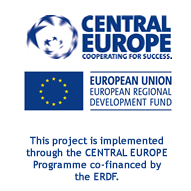

Authors & Contributors
Lívia Kelenné Török (Office for National Economic Planning, ONEP)
-
Cover page, design: E-visit Kft.
Pricipal Authors:
Kyra Tomay PhD (external expert)
Lea Kőszeghy PhD (Habitat for Humanity Hungary)
Lívia Kelenné Török (Office for National Economic Planning ONEP)
Martin Šimon (Institute of Sociology of the Academy of Sciences of the Czech Republic ISCAS)
Co-authors / Contributors
Csilla Hoffmann (Office for National Economic Planning ONEP)
Márton Péti, PhD (Office for National Economic Planning ONEP)
László Gere (Office for National Economic Planning ONEP)
-
Balázs Szabó (Office for National Economic Planning ONEP)
-
Artur Ochojski (University of Economics Katowice UEK)
-
Marcin Baron (University of Economics Katowice UEK)
-
Adam Polko (University of Economics Katowice UEK)
-
Diana Borowski (Thuringian Ministry for Building, Regional Development and Infrastructure TMBLV)
-
Kornelia Ehrlich (Leibniz Institute for Regional Geography IfL)
-
Matthias Schaarwächter (Leibniz Institute for Regional Geography IfL)
-
Řeháková Michaela (Regional Authority of Ústí Region)
-
Zoltán Balogh (Észak-alföld Regional Development Agency Non-profit Limited Company ÉARDA)
-
Zsuzsanna Antal (Észak-alföld Regional Development Agency Non-profit Limited Company ÉARDA)
-
Erich Giordano (National Union of Mountain Municipalities, Communities and Authorities – Piedmont Delegation UNCEM)
-
Katarzyna Opoczka (The Małopolska Region)
-
Alicja Boryczko (The Małopolska Region)
-
Vlasta Vodeb (Urban Planning Institute of the Republic of Slovenia UIRS)
-
Ádám Radvánszki (External expert)
-
Franc J. Zakrajšek (Urban Planning Institute of the Republic of Slovenia UIRS)
-
Ádám Radvánszki (External expert)
-
Zoltán Kohán (Office for National Economic Planning ONEP)
-
Orsolya Csizmár (Office for National Economic Planning ONEP)
- Published by Office for National Economic Planning, 2014
- Dissemination Level
- PU Public
-
